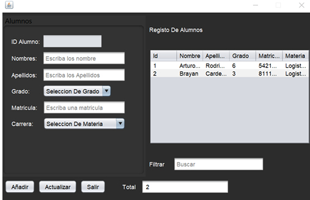
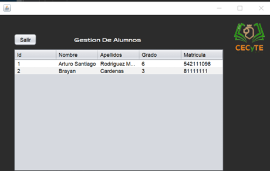
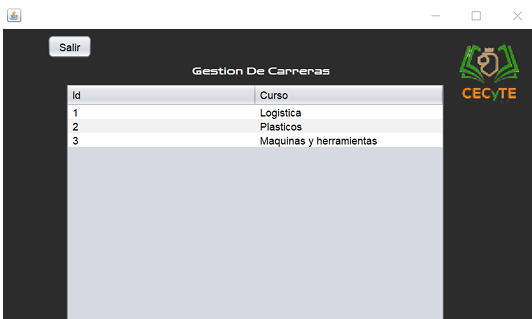
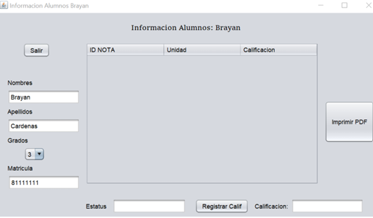
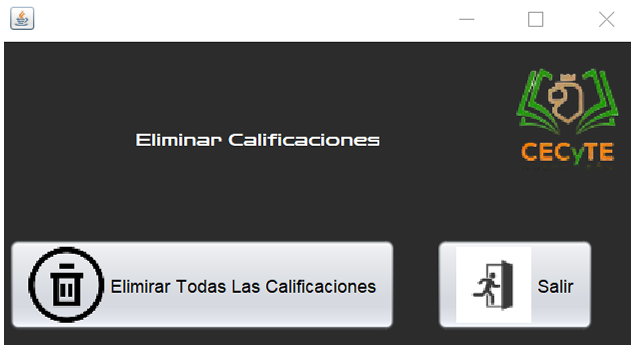

Sistema desarrollado para administrar información escolar, permitiendo registrar alumnos, grupos, cursos y calificaciones.
El objetivo principal fue crear una solución que facilitara el control académico mediante una interfaz sencilla y conexión con una base de datos.
Este proyecto permitió reforzar programación orientada a objetos, manejo de interfaces gráficas, conexión con bases de datos y generación de reportes.




